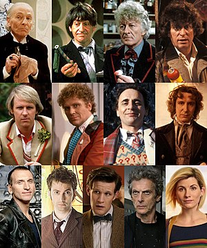

The Doctor, a Time Lord from the planet Gallifrey
A Madman with a Box
The Doctor is not from Earth, he is a Time Lord from the planet Gallifrey. The Time Lords were considered to be one of the oldest and most powerful races in the universe. Sometime in the future the Time Lords went to war against the Daleks and lost, the Doctor is the only known survivor.